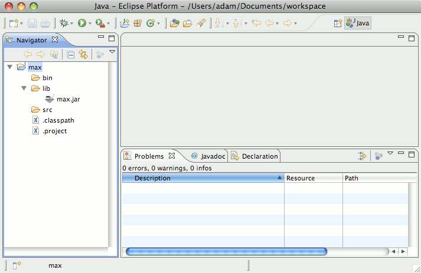

Max/MSP Development with Eclipse
This article explains how to setup an environment to develop Java externals for Max/MSP using Eclipse, the popular free open source IDE. Eclipse is cross platform, so these instructions will work on OS X or Windows. No prior experience with Eclipse is assumed. If you already know Eclipse and want a more concise setup guide, see Nick Rothwell's article "Configuring Eclipse for MXJ".
Note: This article was written in 2008 so it refers to older versions of the involved software. Most of the steps should still be the same today. I'm not really sure because I don't use Eclipse any more. These days, I use IntelliJ IDEA, which costs money but I like it a lot better than Eclipse (and it's free for open source projects).
Conventions
When I say "right click", OS X users should understand this is the same as ctrl+click.
[Max installation] refers to the topmost folder of your Max/MSP installation. This is normally /Applications/MaxMSP 4.6 on OS X or :\Program Files\Cycling '74\MaxMSP 4.6 on Windows. (Or Max5 instead of MaxMSP 4.6 if you are using the latest version)
Step by Step Instructions
- Install Eclipse. Go to the Eclipse downloads page and choose a package. For most people the basic "Eclipse IDE for Java Developers" package is fine. Unpack the download and put the eclipse folder in the location of your choice.
- Start Eclipse. If this is your first time it will prompt you to select a workspace. This is where your all your Eclipse projects and files will be stored. Check the "Use this as the default and do not ask again" option.
- Setup your workbench. If this is your first time you'll see a welcome screen. Eclipse
can be confusing, so here's a simple but effective way to setup your workbench:
- Go to Window -> Open Perspective -> Java. Close the welcome tab if it is still open.
- Click Window -> Show View -> Navigator. This will add a file browser tab to the left pane.
- Close the Task List and Outline tabs on the right (this should get rid of the right pane) and close the Package Explorer and Hierarchy tabs on the left. We don't need any of these now. You can get them back by selecting them from the Window -> Show View menu.
- Create a Java project. Right click in the navigator tab and select New -> Java Project. Enter the name max. Then click finish. You should now see a folder named max in the Navigator.
- Add the Max Jar to your project:
- In your Eclipse project, create a folder named lib by right clicking the max folder and selecting New -> Folder.
- Copy the max.jar file, found at [Max installation]/Cycling '74/java/lib/max.jar, to your project's lib folder.
- Back in Eclipse, right click your max folder and select Refresh. This is so Eclipse will notice max.jar.
- Right click your max folder again and select Properties -> Java Build Path -> Libraries -> Add JARs...
- Select max.jar and click OK
Note: It is not necessary to copy these jars into your project. I consider it a best practice to keep all the files required to build your project inside the project itself. This way you can move your environment to another machine and everything will continue to compile. The downside is when a new version of max.jar is installed, you must remember to manually copy it over to your Eclipse project. If you prefer not to worry about that, choose "Add External Jars..." in the Build Path -> Libraries menu and select the max.jar file under your Max installation instead of copying the jar file to your Eclipse project.
At this point your workspace should look like this:  - Set up Max's classpath to find your Java externals. Go to the file [Max installation]/Cycling
'74/java/max.java.config.txt. Make a backup! Edit the file and find the line:
; max.dynamic.class.dir /Users/topher/myclasses ;
Make a copy of this line and remove the leading semicolon and change the path to the bin folder of your Eclipse project, so it should look something like this:
max.dynamic.class.dir /Users/adam/Documents/workspace/max/bin
Note: you need to restart Max after making changes to this file. - Create your first external. In Eclipse, right click the src folder and select New -> Class. Enter
MaxTest for the name and click Finish. Paste this into the MaxTest file:
When you save the file, MaxTest.class should appear in the bin folder. If not check the Project menu: the "Build Automatically" setting should be turned on. This way, every time you save a file Eclipse will compile it automatically. - Use your external. Finally! Fire up Max/MSP and add the object [mxj MaxTest]. Connect it's left
outlet to a [print] object and send it a bang. In the Max window you should see: Congratulations!
The patch:
- Change your external.. Change "Congratulations!" to say something else. Save the file and Eclipse
will build it automatically. Go back to Max and click the button again. What's going on here? It still says
Congratulations!
Max already loaded the object into memory. It didn't notice your changes. We need to force it to reload the object. Luckily here is an easy way: Delete the object then immediately undo. This will keep your patch in order but the Java code will have reloaded. Now click the button again and it should do what you expect.
Remember this step! If you can't figure out why the code isn't working, maybe you forgot to delete-undo. Some other tips:- Sometimes it takes a moment for Eclipse to build your changes. Be careful of doing the delete-undo too fast or you might load the old code again. When in doubt, delete-undo again.
- To save time if you have multiple copies of the object in Max, select them all and delete-undo them together.
{kind=link}
Next Steps
Read [Max installation]/java-doc/WritingMaxExternalsInJava.pdf and take a look at the tutorial files in that folder.
To code in Java you need to know the API (application programming interface). Here is the API for Java 5 (you might have Java version 4 or 6 instead, run "java -version" to find out). Cycling '74 provides another API for connecting Java to Max (that's the max.jar file we put in your project). Cycling's API documentation can be found at [Max installation]/java-doc/api/index.html. You will be referring to these a lot so you probably want to bookmark them in your browser.
BUT! The API reference is not an effective resource for learning the Java language. Try googling for tutorials or consider investing in a book on Java.
If you are interested in embedding Ruby in Java and Max, try my try my JRuby for Max object.
Adam Murray, 2008
contact the author...